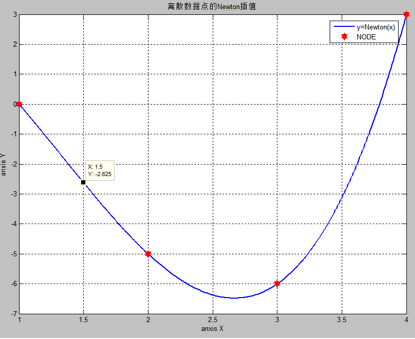
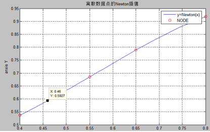

8.6 NEWTON 插值
1.例题与程序
已知一组观测数据为
 =1 2
3 4
=1 2
3 4
 =0 -5 -6 3
=0 -5 -6 3
试用此组数据构造Newton 3次插值多项式，
，并求y(1.5)的近似值。
MATLAB程序编辑如下：
（1）主函数
%变量输入模块
sym A;
A=input('请输入插值点的数据矩阵[xi;yi]')
s=length(A(1,:));
%数值计算模块
D=DiffQut(A);
X=A(1,1):0.01:A(1,s);
Y=Newtonployinterp(A,D,X);
%图像处理模块
plot(X,Y,A(1,:),A(2,:),'or');
legend('y=Newton(x)','NODE');
title('离散数据点的Newton插值');
xlabel('anxis X');
ylabel('anxis Y');
grid on;
%符号表示模块
symx=sym('x');
D1=DiffQut(A);
P=Newtonployinterp(A,D1,symx);
pretty(P)
simplify(P)
（2）插值多项式计算函数 Newtonployinterp
function F=Newtonployinterp(A,D,X) %函数入口出口
n=length(A(1,:));
F=zeros(size(X));
F=F+D(1,1);
m=ones(size(X));
for k=2:n
m=(X-A(1,k-1)).*m;
F=F+D(k,k)*m;
End
(3)差商矩阵计算子函数
function N=DiffQut(Node) %输入输出定义
n=length(Node(1,:)); %计算节点数目
L=zeros(n,n); %生成差分矩阵
for i=1:n
A(i,1)=Node(2,i); %为差分矩阵赋初值
end
for j=2:n
for i=j:n
A(i,j)=(A(i,j-1)-A(i-1,j-1))/(Node(1,i)-Node(1,i-(j-1))); %由n-1阶差分计算n阶差分
end
end
N=A;
程序说明：
（1） 主函数功能，从用户的输入读入插值数据点的xi，yi数据，并将其存为矩阵格式，并用length（）函数计算用户输入了多少数据点保存在n中，然后调用子函数Diff（），利用用户输入的插值节点的值生成一个差商矩阵 。然后生成一个步长很短的行向量区间介于x0到xn间，调用插值函数值计算函数Newtonpolyinterp( )函数计算出这个行向量内个数据点的插值所得到的值。然后利用该数值进行作图并将数据点也同时作图，观看拟合效果并求出需要点的值。然后利用MATLAB强大的符号计算功能将一个sym型变量传入插值函数值计算函数求出插值多项式的符号解，然后化简。
（2） 子函数function
F=Newtonployinterp(A,D,X)该函数功能是计算插值多项式的数值。因为差分矩阵A已经计算出，并且MATLAB的向量点乘功能（分量与分量间做乘法），只需要一个循环就可以算出插值多项式的所有项并累加。
（3） 子函数function N=DiffQut(Node)，该子函数功能是计算差分矩阵
运行结果：
符号结果：
>> newtonfit_1
请输入插值点的数据矩阵[xi;yi][1 2 3 4;0 -5 -6 3]
A =
1
2 3 4
0
-5 -6 3
-5 x + 5 + 2 (x - 2) (x - 1) + (x -
3) (x - 2) (x - 1)
ans =
3-4*x^2+x^3
>>
图象结果：

图中可以读出y（1.5）=-2.625
2.实验题
(1)
=0.40 0.55
0.65 0.8 0.9
 =0.537 0.685
0.789 0.919 1.26
=0.537 0.685
0.789 0.919 1.26
试用此组数据构造Newton 3次插值多项式，
，并求x=0.46,x=0.68的三次插值。
（2）
 =93 96
100 104 108
=93 96
100 104 108
 =11.38 12.80
14.70 17.50 19.81
=11.38 12.80
14.70 17.50 19.81
试用此组数据构造Newton 插值多项式，
，并求y(102)的近似值。
第一题运行结果：
X=0.46时候 为得到较好精度去掉最后的节点。
符号解：
newtonfit_1
请输入插值点的数据矩阵[xi;yi][0.40 0.55 0.65
0.8;0.537 0.685 0.789 0.919 ]
A =
0.4000
0.5500 0.6500 0.8000
0.5370
0.6850 0.7890 0.9190
427
74 16 / 11\ 34 / 13\ /
11\
---- + -- x + -- |x - --| (x - 2/5) - --
|x - --| |x - --| (x - 2/5)
3000
75 75 \ 20/ 15 \ 20/ \
20/
ans =
2567/5000-3343/3000*x+96/25*x^2-34/15*x^3
图像解：

图中可以得到x=0.46时候得到y=0.5927；
X=0.68的时候为了得到较好精度舍去第一个节点
符号结果：
>> newtonfit_1
请输入插值点的数据矩阵[xi;yi][0.55 0.65 0.8
0.9;0.685 0.789 0.919 1.26]
A =
0.5500
0.6500 0.8000 0.9000
0.6850
0.7890 0.9190 1.2600
113
26 52 / 13\ /
11\ 652 /
13\ / 11\
---- + -- x - -- |x - --| |x - --| + ---
(x - 4/5) |x - --| |x - --|
1000
25 75 \ 20/ \
20/ 21 \
20/ \ 20/
ans =
-315507/35000+449161/10500*x-10988/175*x^2+652/21*x^3
>>
2567/5000-3343/3000*x+96/25*x^2-34/15*x^3
图像解：

图中可以读出x=0.68时候，y=0.803；
第二题
符号解：
>> newtonfit_1
请输入插值点的数据矩阵[xi;yi][93 96 100 104
108;11.38 12.80 14.70 17.05 19.81]
A =
93.0000
96.0000
100.0000 104.0000 108.0000
11.3800
12.8000 14.7000 17.0500
19.8100
816
71 8784163844621751
- --- + --- x + -------------------- (x - 96)
(x - 93)
25
150 36893488147419103232
1448950321671769
+ ------------------- (x - 100) (x -
96) (x - 93)
1152921504606846976
1673649399184001
- -------------------- (x - 104) (x -
100) (x - 96) (x - 93)
18446744073709551616
ans =
-276033140418271699579191/28823037615171174400+1048650987264695174637911/2767011611056432742400*x-207146152055709325729/36893488147419103232*x^2+680927419026060697/18446744073709551616*x^3-1673649399184001/18446744073709551616*x^4
图象解：

图中可以读出x=102时候，y=15.78；
总结：
由于MATLAB内核中包含有maple，并且MATLAB强大的图形功能，和基于线性代数的设计理念，使得MATLAB不仅可以实现数据的可视化，而且还可以的到其它编程语言不好的到的符号解。